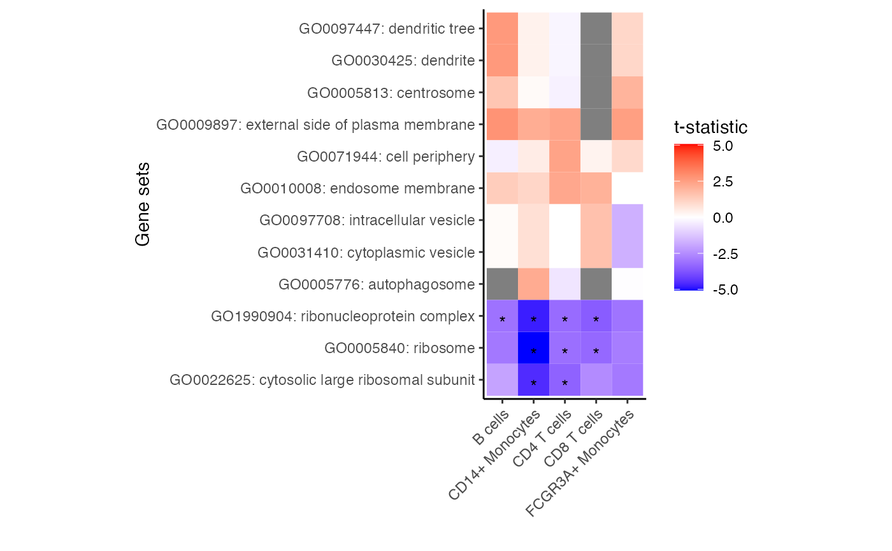
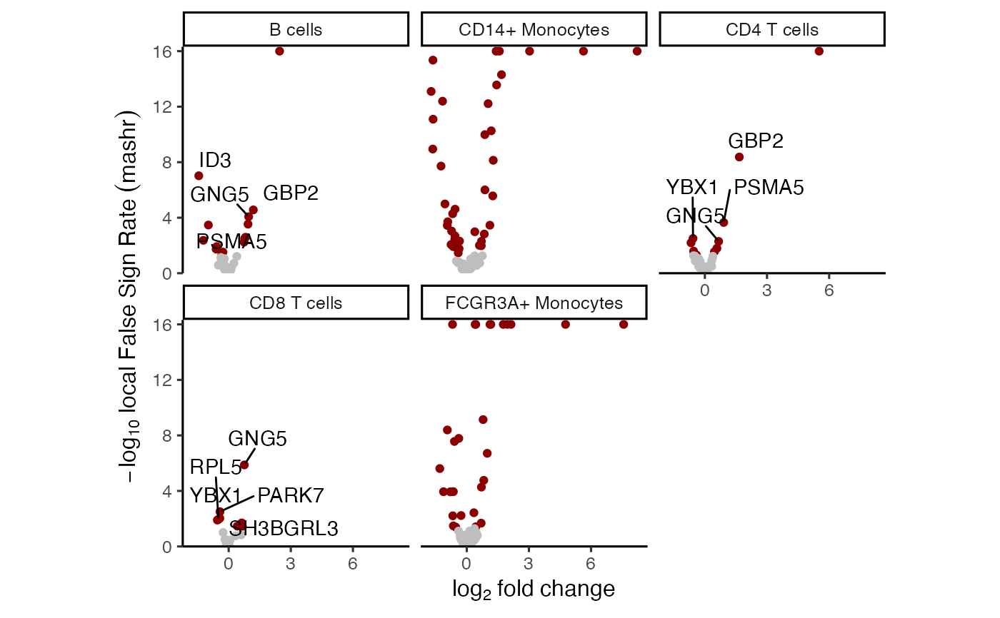
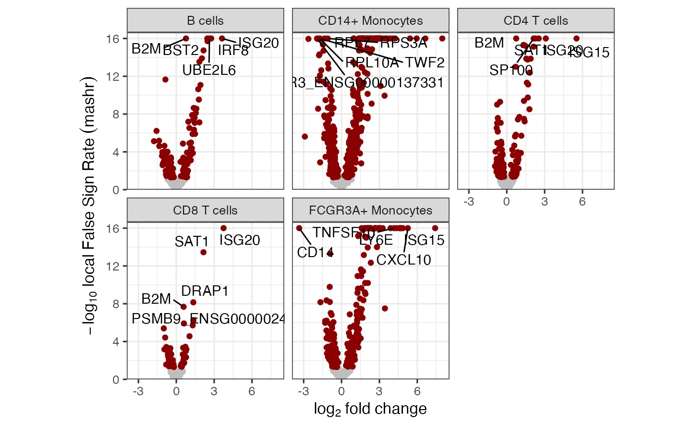

Run mash analysis on dreamlet results
run_mash(fit, coef)
| fit | result from |
|---|---|
| coef | coefficient to be analyzed |
a list storing the mashr model as model and the original coefficients as logFC.original
Apply mashr analysis (Urbut, et al. 2019) on the joint set of coefficients for each gene and cell type. Mashr is a Bayesian statistical method that borrows strength across tests (i.e. genes and cell types) by learning the distribution of non-zero effects based the obesrved logFC and standard errors. The method then estimates the posterior distributions of each coefficient based on the observed value and the genome-wide emprical distribution.
In single cell data, a given gene is often not sufficiently expressed in all cell types. So it is not evaluated in a subsets of cell types, and its coefficient value is NA. Since mashr assumes coefficients and standard errors for every gene and cell type pair, entries with these missing values are set to have coef = 0, and se = 1e6. The output of mashr is then modified to set the corresponding values to NA, to avoid nonsensical results downstream.
Urbut SM, Wang G, Carbonetto P, Stephens M (2019). “Flexible statistical methods for estimating and testing effects in genomic studies with multiple conditions.” Nature genetics, 51(1), 187--195.
#>library(SingleCellExperiment) data(example_sce) # create pseudobulk for each sample and cell cluster pb <- aggregateToPseudoBulk(example_sce, assay = "counts", cluster_id = 'cluster_id', sample_id = 'sample_id', verbose=FALSE) # voom-style normalization res.proc = processAssays( pb, ~ group_id)#>#>#>#>#>#>#>#>#>#># Differential expression analysis within each assay, # evaluated on the voom normalized data res.dl = dreamlet( res.proc, ~ group_id)#>#>#>#>#>#>#>#>#>#>#># run MASH model # This can take 10s of minutes on real data # This small datasets should take ~30s res_mash = run_mash( res.dl, 'group_idstim') # extract statistics from mashr model # NA values indicate genes not sufficiently expressed # in a given cell type # original logFC head(res_mash$logFC.original)#> B cells CD14+ Monocytes CD4 T cells CD8 T cells FCGR3A+ Monocytes #> ISG20 3.5977107 6.1228165 3.0731003 3.7280605 4.9675542 #> ISG15 NA 8.1862294 5.5005509 NA 7.5386815 #> IRF8 2.8610495 NA NA NA NA #> CXCL10 NA NA NA NA 5.2692770 #> UBE2L6 2.6902060 3.0387733 2.2976869 NA 1.9672296 #> B2M 0.7765687 0.9465299 0.7490134 0.5667585 0.4578611#> B cells CD14+ Monocytes CD4 T cells CD8 T cells FCGR3A+ Monocytes #> ISG20 3.6201965 5.9543024 3.0940579 3.7474017 4.8601198 #> ISG15 NA 7.9791899 5.5248155 NA 7.4170174 #> IRF8 2.7637566 NA NA NA NA #> CXCL10 NA NA NA NA 5.2524025 #> UBE2L6 2.6253831 2.9768342 2.2885609 NA 1.9513343 #> B2M 0.7662939 0.9141552 0.7442989 0.5792546 0.4655056# how many gene-by-celltype tests are significant # i.e. if a gene is significant in 2 celltypes, it is counted twice table(get_lfsr(res_mash$model) < 0.05, useNA="ifany")#> #> FALSE TRUE <NA> #> 2407 1102 2346# how many genes are significant in at least one cell type table( apply(get_lfsr(res_mash$model), 1, min, na.rm=TRUE) < 0.05)#> #> FALSE TRUE #> 593 578# how many genes are significant in each cell type apply(get_lfsr(res_mash$model), 2, function(x) sum(x < 0.05, na.rm=TRUE))#> B cells CD14+ Monocytes CD4 T cells CD8 T cells #> 143 488 144 77 #> FCGR3A+ Monocytes #> 250# examine top set of genes # which genes are significant in at least 1 cell type sort(names(get_significant_results(res_mash$model)))[1:10]#> [1] "ACTB" "ACTG1_ENSG00000184009" "ARHGDIB" #> [4] "ATP5L_ENSG00000167283" "ATP6V1G1" "B2M" #> [7] "BRK1" "BTF3" "BTG1" #> [10] "CALM1"# Lets examine CXCL3 # There is a lot of variation in the raw logFC res_mash$logFC.original["ISG20",]#> B cells CD14+ Monocytes CD4 T cells CD8 T cells #> 3.597711 6.122816 3.073100 3.728061 #> FCGR3A+ Monocytes #> 4.967554# posterior mean after borrowing across cell type and genes get_pm(res_mash$model)["ISG20",]#> B cells CD14+ Monocytes CD4 T cells CD8 T cells #> 3.620196 5.954302 3.094058 3.747402 #> FCGR3A+ Monocytes #> 4.860120#># valid values for statistic: # "tstatistic", "abs(tstatistic)", "logFC", "abs(logFC)" df_gs = zenith_gsa(res_mash, go.gs) # Heatmap of results plotZenithResults(df_gs, 2, 1)# volcano plot based on mashr results # yaxis uses local false sign rate (lfsr) plotVolcano(res_mash)